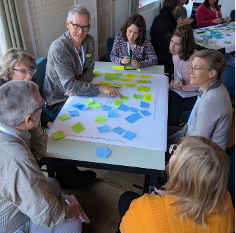
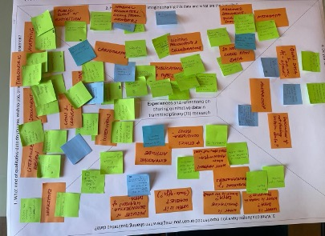

Summary of the FAIRqual workshop discussions
Source:vignettes/articles/summary-fairqual-workshop-itd24.Rmd
summary-fairqual-workshop-itd24.Rmd1. Background
The aim of the FAIRqual project is to develop both technological implementations and conceptual procedures for sharing qualitative data based on the FAIR principles in transdisciplinary (Td) research. As a first project activity, we were interested in a broad collection of past and imagined experiences with open data from transdisciplinary researchers and researchers interested in transdisciplinary research. The International Transdisciplinary Conference (ITD24) that took place in Utrecht NL between 04 and 08 November 2024 proved to be a unique opportunity to host such a workshop. The following is a summary of the approach and results of the workshop. Based on the results of the workshop, we will identify issues to be further explored in expert interviews with e.g. Td researchers and information specialists. The material collected from both the workshop and the expert interviews will be used to develop a guide for Td researchers on how to apply FAIR principles to qualitative data. Accompanying activities will keep workshop participants and other interested parties informed about the progress of the project and build a community of practice.
2. Approach
2.1 Workshop procedure
At ITD24, the FAIRqual project team conducted a 90-minute workshop. The workshop was attended by 24 people from the conference, including experienced Td researchers, but also participants with a research/work focus related to transdisciplinarity. The workshop began with a short warm-up exercise, the completion of the informed consent form (see 2.2), and an introductory presentation on the FAIR principles and open research data in transdisciplinary research (PowerPoint slides available at https://fairqual.org/blog/posts/2024-12-05-itd24/). For the first part of the workshop, participants were divided into four groups, each sitting at a separate table. On a flipchart (fig. 2), each table discussed the same set of questions designed to reflect on lived and imagined experiences of sharing qualitative data in transdisciplinary research:
What kind of qualitative data do you use, wish to use, or imagine using in Td research?
How do you share, or imagine sharing this data and what are the benefits?
What challenges have you experienced, or can you imagine when sharing qualitative data?
Do you have any burning questions about open research data?
Led by a moderator, each table went through 3 rounds:
Round 1: Personal reflection on own experiences / ideas for the 4 sectors. Participants individually wrote down their reflections on different colored post-it notes to indicate whether it was a lived / imagined experience.
Round 2: Each participant shared their personal reflection by going through the 4 sectors and sticking their post-it notes on the flip chart.
Round 3: Post-it notes from each sector were discussed. Similar post-it notes were grouped together and an umbrella term for the group was defined.


For the second part, two groups were formed by joining two tables. Participants selected challenges identified in the first part and then found ways to respond to the challenge, either by drawing on the experiences described in the first part (existing post-it notes) or by discussing further approaches. Due to time constraints, the discussions in the second part had to be condensed. The workshop ended with a summary and a short outlook on further work of the FAIRqual project.
2.2 Informed consent
In order to be able to use and share the data and results later, an informed consent form was introduced at the beginning of the workshop, outlining the topic and stating that the workshop products will be made publicly available after the workshop. Participants had the option of putting a sticker (red dot) on post-it notes that they did not want to share publicly to avoid sharing sensitive information. However, no one used this option. Before the products of the workshop were published, participants also had the opportunity to comment on the digitized version. For photos taken during the workshop, we followed the standards set by the conference, which asked participants who did not want to be photographed to wear a colored wristband. In addition, workshop participants were given the opportunity to inform the workshop organizers (in person or by email) if they did not wish to be photographed for use in the FAIRqual project.
2.3 Digitization and analysis of workshop results
After the workshop, all flip charts were translated into table format. For the four flipcharts from the first part, a table was created in which each post-it was considered a new row, with “table identifier”, “imagined/lived experience”, “group”, and “umbrella terms” added as attributes. The two flipcharts from the second part were each organized into a table with two columns for the challenge and the proposed approach.
To get an overview of all topics described and discussed in the two rounds, both documents were analyzed in MaxQDA using qualitative content analysis. Codes were created for post-it notes with similar themes, taking into account all post-it notes from the workshop (individual, umbrella terms, and additions from the second part). In an iterative process, categories, and where necessary, subcategories were defined to structure the identified codes. We allowed categories to relate to the four questions of the first part (e.g., data types used, challenges/fears) as well as to more concrete aspects that came up during the discussions. The goal was for the categories to be largely mutually exclusive. To illustrate the overall result of the discussions, a short summary was written for each category/subcategory. The codebook as well as the digitized workshop outputs can be found in as additional datasets.
3 Summary of workshop learning outcomes
In the following the identified discussion points will be presented,
going through one thematic category at the time. Individual
subcategories / codes are highlighted in bold to be able to refer to the
coding book (see codebook_qualitative).
3.1 Data types
As a basis for discussing the sharing of qualitative data, it is important to have an idea of the type of data being used, as different data may require different approaches. The following data types were identified as being used/intended to be used by participants. The data types reflect the full research experience of the participants and do not necessarily relate only to transdisciplinary research practices.
A very popular data type mentioned was interview data. While “traditional” interviews were most frequent, data from other interview types like focus groups, oral (hi)stories, surveys, and informal talks were also listed.
Products of Td processes, often in the form of workshop outputs, were also mentioned as a popular type of data. Such data can include workshop minutes, collaboratively created flipcharts with e.g. mind maps, post-it notes, spreadsheets, and other ways of documenting the workshop (personal notes, photos, quotes).
Different types of observations are another group of data types: On the one hand there are data produced through participatory observations / ethnographic approaches that are part of a fixed methodology / data collection procedure. On the other hand, (field) notes were also mentioned to capture less structured observations during different stages of the research/teaching process, as well as notes on personal experiences/reflections.
There was also mention of different types of image data, such as photos or videos, either produced by the researcher or by the participants. More specifically, photographs (including text) resulting from the photovoice approach were also reported. Other types of imagery identified included the results of (co-produced) mapping efforts, as well as artistic approaches. Image data could be produced either as a stand-alone activity or during a workshop. However, due to its specific nature, it is listed separately.
Another type of data mentioned was existing documents as a basis for analysis. These included both academic documents (e.g. literature, project reports) and non-academic documents from practice (e.g. laws, company level documents). It was interesting to see that existing non-academic documents were mentioned quite frequently as a data type.
Other responses included quantitative data types or qualitative analysis methods but are not reported here because of the focus on qualitative data.
3.2 Data sharing approaches
This category includes various approaches to data sharing that workshop participants are already practicing or could imagine practicing. A frequently mentioned approach is the dissemination of summaries of the research data and analysis. In written form, this could include scientific publications, lay summaries, letters to stakeholders, publicly available project reports or policy briefs. The possibility of sharing data/analysis results orally during presentations or exhibitions was also mentioned. Different options were suggested for the target audience, ranging from internal project events to public events. Some proposed that these events could also include interactive parts where participants can discuss / give feedback on the data / results.
Another practice is data sharing within the team. This ranges from confidential sharing of raw data with involved researchers, to informal discussions between team members, to sharing data with practice partners. One idea to make this more interactive is to use a living document between the corresponding actors involved, which is editable to add further input.
Last, but not least, data platforms to share data online publicly (if consent forms give permission for this) were discussed. For some, a data repository was available at their institution, but for others the question was which data repository to use. Other open questions included what kind of repository rules exist, how to prepare data for sharing on such a platform, and who should manage these platforms (institutions, communities). The advantage of online repositories was seen in the possibility of facilitating research and collaboration across research groups and national borders, as well as in the possibility of obtaining online data from offline countries.
3.3 Fears and direct challenges of sharing
With the topic of open research data, automatically also fears and direct challenges came up. This especially targets sensitive (raw) data, such as interview transcripts. With regard to sensitive data two different concerns came up: On a more moral level, scientists have a clear responsibility to care for/do no harm to the social actors involved in the research. Naïve sharing of raw data could compromise this responsibility. The second concern is more practical, as confidentiality is seen as key to gaining the trust of interviewees and other research participants to speak freely, which in turn is key to generating more useful data.
In addition to these basic concerns, which are valuable for qualitative data in general, qualitative data collected in a Td process is often highly dependent on local and research context. On the practical side, this poses significant challenges for anonymization: Is it possible to anonymize enough to make participants untraceable without losing important contextual information needed for proper interpretation? In terms of research quality, participants noted the risk that openly available qualitative data could be analyzed out of context, distorting the data and making the results unreliable (at best) or (more worrisome) leading to politization or data misuse.
Fear of data misuse was expressed in regard to three different concerns: Closely related to the issue of using data out of context is the fear that researchers reusing data will not use the data correctly due to a lack of experience or care in analyzing qualitative data. More specifically, concerns were voiced about the politization of open data, such as when quotes are taken out of context to emphasize a certain political purpose. Some also feared that open sharing of qualitative data could further entrench the problem of extractive research, especially if communities/individuals are not adequately involved in the sharing process (e.g., publication without consent or lack of awareness of the consequences of data sharing for local communities). Interestingly someone also asked if there could be potential legal consequences for researchers who don’t know how to manage data.
3.4 Ways of sharing qualitative data
While there were concerns about data sharing, there was also discussion about what arrangements could be put in place to enable certain types of data to be shared. Although the feasibility of anonymization was questioned in relation to research that is closely linked to the local context (see 3.3), anonymization was seen as a possibility and a necessity in order to be able to publish any qualitative (raw) data.
For sensible raw data where full anonymization cannot be achieved, it was proposed that scientists could decide what can be shared. For example, it was mentioned that it is often possible to share certain aspects of data like coding frequencies, respondent demographics, interview protocols, descriptions of the data. This discussion also raised the fundamental question of “what is data” when it comes to sharing research data. Sharing aspects of the data, as discussed in the workshop, is still considered a FAIR data practice, as long as the corresponding datasets are findable and there is sufficient description of what is being shared and what data exists but cannot be shared.
In order to ensure that the local context as well as the context of the data collection is taken into account, data collaborations between the researchers who carried out the original research and the researchers who intend to re-use the data have been discussed as a way of providing access to raw data. This could take the form of a dialogue to exchange essential information and decide on the degree of data sharing, as well as working together to co-create / co-write the new study. Such an approach is linked to a more general possibility that came up several times in the discussion: making data available only upon “reasonable” request in order to control access over who uses the data and for what purposes. The question, of course, is who has the authority to decide whether the data can be shared? This brings us closer to issues of data sovereignty, which will be discussed in the next part.
3.5 Data sovereignty
A key question that has been discussed from different angles is: “To whom does the data belong?”. This has for example implications on the decision whether data should be shared. One input was that the principal investigator (PI) has the last word on the decision of data re-use. Another approach would be to draw on existing practices of indigenous data sovereignty (e.g. CARE principles), where members of the indigenous community, rather than researchers, have the authority over how data are shared. On a more legal dimension, someone also raised the question of who owns the raw data - as well as the analysis products - produced by the scientist but based on/co-created with input from local stakeholders. This is not only an important question for data sovereignty decisions, but could also be a legal issue if, for example, commercial products are developed from the research.
To include participants in research to decide if raw data can be shared or not, there are two levels that came up in the discussions: If there is interest in the data on a communal / practice partners scale, agreements regulating data sharing (e.g. through the use of local data stewards, or platforms managed by communities) could be set up from the start, ensuring that data is both accessible to local communities as well as research.
Whether or not community-driven data management is envisioned, it is critical that the individual participant be able to actively give or retract consent for data sharing. In qualitative research, ethical standards require prior informed consent, where interviewees / other research participants are informed about the reasons for research, and normally, are assured of confidentiality (aka no data sharing). However, an alternative might be to use informed consent to disclose whether and how data will be shared. In order to maintain trust and confidentiality during interviews (or other data collection situations) and still have the possibility to publish anonymized raw data, the option of allowing participants to edit the interview transcripts (or meeting minutes, …) themselves before sharing them was discussed. It might be interesting to follow up on this option in terms of practicalities with researchers who are already using it.
It was also discussed that informed consent may limit sharing options, especially for existing data, as full confidentiality is often promised by default. We would like to emphasize that if confidentiality has been previously promised in an informed consent, this is binding in any case and could only be changed by asking participants for additional consent, e.g. to share interview transcripts. However, this does not mean that nothing can be shared, as even an openly available detailed description of the way and type of data collected may contain important information for future practice/research projects (see 3.4).
3.6 Why share? Practical aspects of sharing
The practicalities that encourage or discourage the sharing of qualitative data from Td research/processes was another topic of lively discussion. This is reflected in many views on the need/motivation for (not) sharing data.
A basic aspect which shapes the sharing of qualitative data is the standards and expectations of institutions (universities, funding agencies, governments). It was often noted that many institutions currently require certain ethical standards, such as compliance with the European Union’s General Data Protection Regulation or approval by ethics committees. This was mentioned as a potentially limiting factor for sharing qualitative data. Some stated that it is a crucial step to be aware of such restrictions in advance, especially when working in international / multi-institutional projects where ethical standards are likely to be different, to design a robust data (sharing) strategy. Although it was not raised in the discussion, it is worth noting that institutions could also have the opposite effect by requiring data management plans or similar requirements where (part of) the data might be expected to be shared.
Several participants noted that a motivation for data sharing is the scientific benefit, both for individual researchers and for the advancement of science as a whole. A major benefit identified was the potential for new collaborations and re-use of data. For example, the possibility of triangulating data from multiple case studies or reusing data in other research fields was discussed, while reducing the time commitment for both researchers and participants. Increased transparency through data sharing was also mentioned as a benefit, either to make content available to a wider audience, or to ensure scientific rigour by opening up the data behind the results. Finally, it was thought that more openly available data on Td processes would advance research on Td processes by enabling meta-reflection and providing learning opportunities.
The value of open data from Td research to practice partners was debated ambiguously. On the one hand, participants could imagine benefits for practice partners, such as the ability to reflect on the data and use it for informed decision making. In the case of a longer research process, the public availability of workshop data could, for example, facilitate exchanges with new stakeholders who missed part of the process or were not invited to all events. However, the question was also raised as to whether social actors would and could use open research data.
During the workshop there were also critical voices about the practical feasibility of sharing qualitative data in Td research. Not only for practice partners, but also for academics, there were doubts about the usefulness of the effort to share qualitative data. In addition to questioning the general usability of qualitative data, some pointed to the difficulty of interpreting qualitative data due to the unstructured nature of the data and the need to understand the context to use it appropriately. Coupled with these general doubts about the usefulness, there was a lot of uncertainty about how to handle the data: How to decide which data to prepare for sharing? How can unstructured qualitative data and the conditions under which it was generated (e.g., in interactive formats such as workshop series) be documented in a way that is comprehensible - and therefore useful - to others? Finally, the extra workload involved in preparing qualitative data for sharing was seen as a potential barrier, especially given the many other responsibilities in academia. It was also pointed out that others could take advantage of the amount of work that went into collecting and preparing the data without reciprocity. Another participant mentioned that the associated increase in paperwork not only creates additional work for researchers but also complicates procedures for participants.
3.7 How to navigate AI?
A side-issue that came up in relation to various topics was the use of AI. On the one hand, there were questions about whether it would be ethically possible/safe for researchers to use AI as a tool to facilitate the transcription process or analysis, or even to conduct interviews (e.g. via chatbots). On the other hand, there was also the question of whether qualitative open data could be sourced for large-scale analysis using only AI, or used to train future large-scale language models, and whether this would be ethical.
4. Conclusions and outlook
Throughout the workshop, there was a wide range of different views and thoughts about Td research and sharing qualitative data according to the FAIR principles, which allowed for an interesting exchange and mutual learning among the workshop participants. On the one hand, there were more fundamental discussions about the risks and opportunities of sharing qualitative data in Td research, and how these relate to underlying developments in government/science policy and technological advances. On the other hand, more practical aspects were also addressed. Depending on the sensitivity of the research, different aspects of data sharing and its pitfalls were discussed, including anonymization, sharing aspects of the data, and implementing access restrictions. There was also the question of which data repositories could be used to make data easily accessible while still complying with institutional policies. Finally, reflections on data authority will be central to Td research in order to find ways to shape data sharing with practice partners/local communities, while also giving individual research participants a voice in how the data might be shared (e.g., self-editing).
All in all, it became clear that Td research has many different forms, needs, and contents. This means that a strategy for making qualitative Td research data FAIR will require different options to adapt to the research and methodological context. The FAIRqual project will take up the findings of the workshop in the next steps of the project and explore them further through expert interviews with both Td researchers and open science experts. The aim is to synthesize future findings in a guideline that will provide concrete examples, but also more generally to raise awareness of the need and possibilities of applying FAIR to qualitative data in Td research. Updates of the project will be published on the projects’ website: https://fairqual.org/.